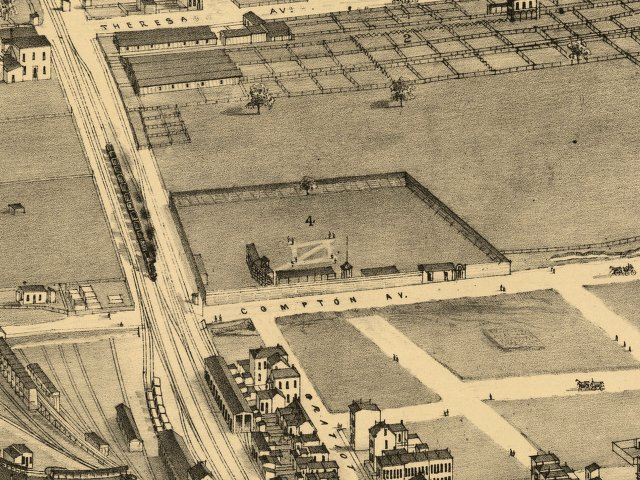

| St. Louis, Missouri - 1876: Red Stocking Ball Park |
|---|
 |
| Birds eye view of St. Louis : showing the new
line of the St. Louis, Kansas City & Northern Ry. running into the Union
Depot. Lord, C. K. CREATED/PUBLISHED [St. Louis : Woodward, Tiernan, and Hale], 1876. NOTES Includes ill. and index to points of interest. REFERENCE LC Panoramic maps (2nd ed.), 439.1 |